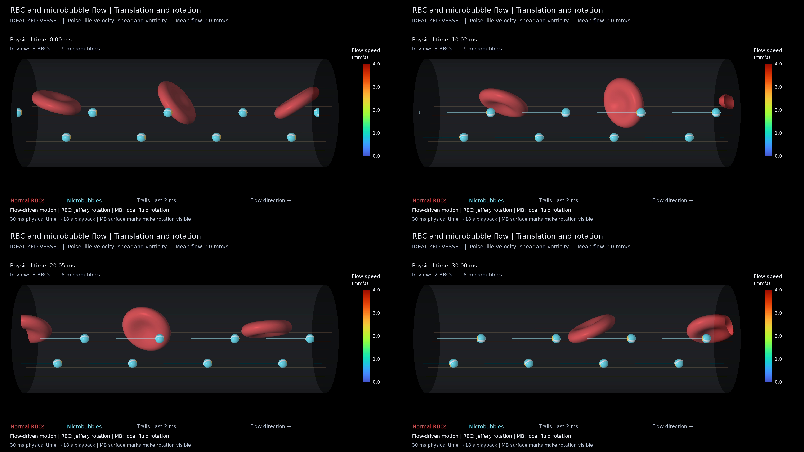
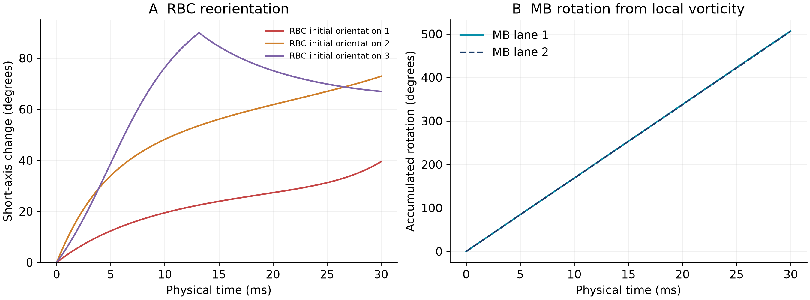

正常双凹红细胞与微泡在同一解析 Poiseuille 流场中运动和旋转。较宽理想化血管内径 14 µm，平均流速 2 mm/s；物理过程 30 ms，慢放为 18 秒。
PPT（内嵌动画） · MP4 · 模型与验证说明 · 轨迹与姿态 CSV · 解析流场 VTU
红色：正常 RBC；青色：MB。MB 表面标记用于显示球体旋转。采用现有 Jeffery / 半涡量角速度近似，不含粒子间流体反馈。

